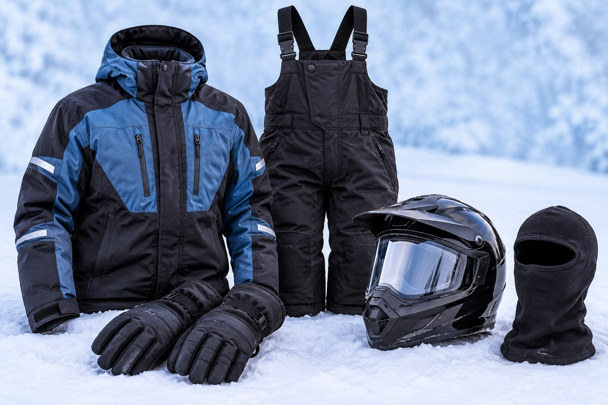

What should you wear snowmobiling?
Staying warm is about more than wearing a thick coat. Wind, moisture, and long periods of exposure can make a winter ride uncomfortable or dangerous. Dress in layers that keep you dry and allow you to adjust as conditions change.
Build a reliable clothing system
- Base layer: Choose moisture-wicking thermal clothing rather than cotton, which can hold moisture against your skin.
- Insulating layer: Add fleece or another warm layer that traps heat without restricting movement.
- Outer shell: Wear a windproof, waterproof snowmobile suit or suitable winter jacket and pants.
- Hands and feet: Use insulated gloves or mittens, warm socks, and waterproof winter boots. Carry spare gloves and socks.
- Head and face: Wear a properly fitted, approved snowmobile helmet with suitable eye protection. A balaclava can help protect exposed skin.
Essential equipment to bring
Even a short ride deserves preparation. Pack supplies in a secure, weather-resistant bag and make sure everyone knows where the essentials are stored.
Your pre-ride packing list
- Approved helmet and appropriate eye protection
- Fully charged phone in a protective case
- Paper trail map or an offline navigation option
- First-aid kit and personal medications
- Water and high-energy snacks
- Flashlight or headlamp and spare batteries
- Basic tool kit and model-appropriate emergency supplies
- Extra warm layers, gloves, and dry socks
- Emergency contact details and a plan for getting help
Equipment needs vary by route, weather, group size, and machine. Check your owner's manual and local guidance before departure.
Safety habits for every rider
Good judgment matters just as much as good gear. A familiar trail can still present unexpected hazards, and conditions may change between the beginning and end of a ride.
Before leaving
- Check the local trail status, forecast, and any active winter weather alerts.
- Inspect the machine, including brakes, lights, steering, track, fuel, and fluid levels as directed by the manufacturer.
- Tell someone your route and expected return time.
- Review local age, licensing, registration, safety-training, and equipment requirements.
- Agree on a pace, meeting points, and a plan if the group becomes separated.
While riding
- Stay on designated, open trails and obey posted signs and speed limits.
- Keep a safe following distance and slow down near turns, intersections, and limited-visibility areas.
- Never ride impaired by alcohol, drugs, or fatigue.
- Use extra caution at road crossings, around other trail users, and after dark.
- Never assume a frozen lake or river is safe to cross. Ice thickness and strength can vary significantly.
New to snowmobiling?
Start with a beginner-friendly route, take a recognized safety course, and learn how your machine responds before riding farther. Ask an experienced rider or qualified instructor to explain controls, braking, turning, and emergency procedures. Do not feel pressured to match a faster group's pace.
Advice for experienced riders
Experience does not eliminate risk. Familiarity can sometimes encourage riders to underestimate changing conditions. Recheck trail reports before each outing, keep emergency supplies current, and avoid treating a previous season's route as proof that today's route is safe.
When riding with others, choose the group's pace based on the least experienced rider and the conditions. A successful day is one in which everyone returns safely, not one in which the group covers the most miles.
Know when to turn around
Severe wind, poor visibility, extreme cold, mechanical problems, or a trail that becomes difficult to navigate are all valid reasons to shorten or cancel a ride. If someone becomes confused, unusually tired, numb, or uncontrollably shivery, stop in a safe place and seek appropriate assistance. Suspected hypothermia or another medical emergency requires prompt help.
This educational guide is not a substitute for formal safety training, medical advice, your snowmobile manufacturer's instructions, or current Wisconsin regulations.